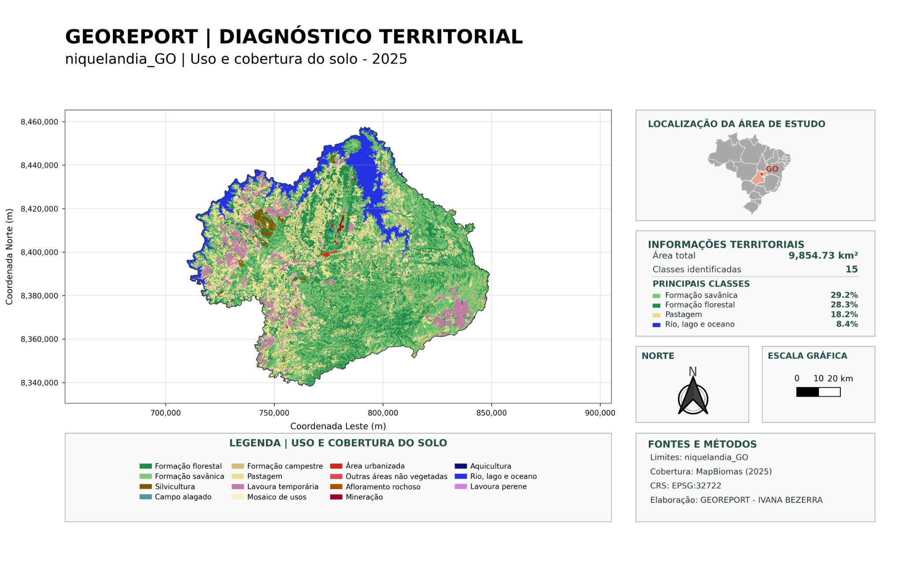

Automação GIS com Python

Projeto em destaque · GeoReport
GeoReport — Diagnósticos Territoriais Automatizados
Desenvolvimento de uma ferramenta reutilizável em Python para análise de uso e cobertura do solo em diferentes áreas do Brasil. O fluxo valida dados vetoriais, identifica UFs, obtém classificações do MapBiomas pelo Google Earth Engine, calcula áreas por classe e gera mapas temáticos, tabelas e relatórios técnicos em PDF.
PythonGeoPandasRasterioMapBiomasGoogle Earth EngineGoogle Drive APIReportLab